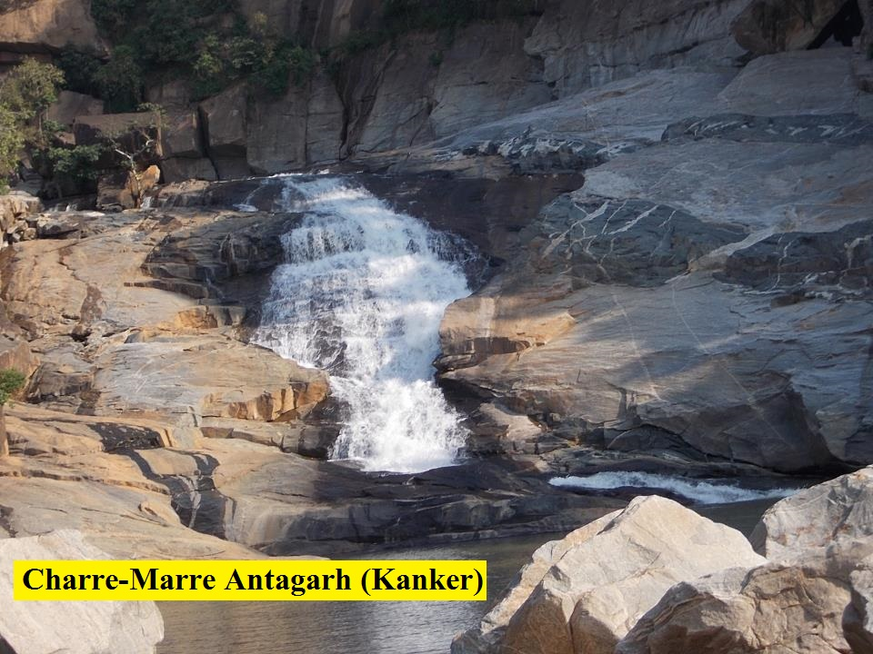

Chhattisgarh Tourism
Welcome to chhattisgarh tourism
Narendra Modi
Prime Minister of India
Bhupesh Baghel
Chief Minister
Home |
District |
Temple |
River |
Zoo |
Water_fall |
Airport |
login |
Rakasganda waterfalls,Ambikapur(150 km)
awai waterfall,Ramanujganj

Charre-marre_Kanker
chitradhara
Chitrakoot
How To Reach Hear
Chitrakot_Falls1
Devpahri_korba
ghataranit
Gullu Waterfall,Jashpur
Hazra falls,Darrekasa,Dongargarh
Jharalava waterfall,Dantewada
kotebira_jashpur
kanhar-river
Kanger_dhara_bastar
Manchali_waterfall_Mainpat
Malanjhkudum
mandawaa
Chitrakot_Falls1
Devpahri_korba
ghataranit
Rajpuri waterfall,Bagicha,Jashpur
rajpuri
tamra_ghoomar
Tigerpoint Waterfall_Mainpat
Tirathgarh_waterfall
Jatmai waterfall,Gariyaband
Kailsah Gufa waterfall,Jashpur
Malajkundam waterfall,Kanker
Chingar Pagar waterfall,Gariyaband
Devpahri_korba
Kanger_dhara_bastar
Rani dahra Waterfall,Kawardha(24 Km Away)


 Bhupesh Baghel Bhupesh Baghel
Bhupesh Baghel Bhupesh Baghel .jpg)


.jpg)
{kind=link}
{kind=link}
{kind=link}
{kind=link}
{kind=link}
{kind=link}
{kind=link}
{kind=link}
{kind=link}
{kind=link}
{kind=link}
{kind=link}
{kind=link}